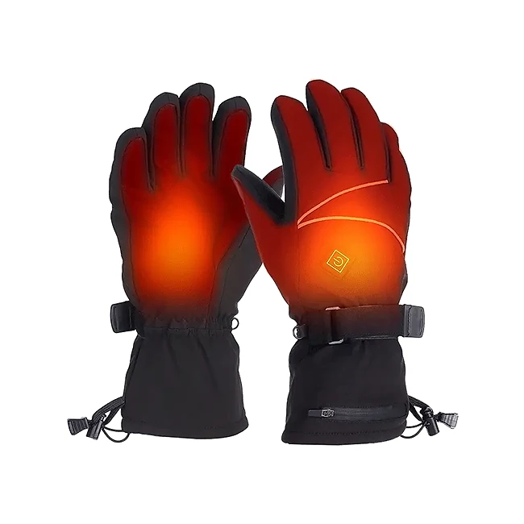
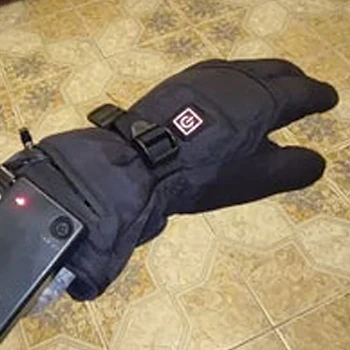

Was ist HeatGuard und wie funktioniert es?
Die HeatGuard Handschuhe sind beheizbare Winterhandschuhe mit eingebauten Heizelementen und wiederaufladbarem Akku. Laut der offiziellen Website sind sie für alle gedacht, die auch im Winter aktiv bleiben wollen: beim Radfahren, Skifahren, Snowboarden und Wandern, aber auch bei der Arbeit in der Kälte. Sie sollen die Hände warm und beweglich halten, selbst bei Minusgraden.
Das Prinzip ist einfach. In den Handschuhen liegen Heizelemente aus Carbonfaser, die vom Handrücken bis zu den Fingerspitzen reichen. Ein Akku in einer kleinen Tasche am Handgelenk liefert den Strom. Über einen Knopf mit Leuchtsymbol schalten Sie die Heizung ein und wählen eine von drei Wärmestufen: niedrig, mittel oder hoch. Laut Hersteller sind die Handschuhe in nur fünf Sekunden warm.
Neben der Heizung nennt die Website zwei wasserdichte Schichten, die die Hände bei Nässe und Schnee trocken halten sollen, leitfähiges Material an den Fingerspitzen für die Bedienung von Smartphone und Tablet sowie einen intelligenten Energiesparmodus, der sich nach fünf Minuten Inaktivität einschaltet. Er soll vor Überhitzung schützen und die Akkulaufzeit verlängern.
Der Akku arbeitet laut Website mit 7,4 Volt und soll selbst bei −20 °C noch 70 % seiner Kapazität behalten. Die Handschuhe werden in einer Einheitsgröße („Unisize“) und in Schwarz verkauft. Der Hersteller spricht von über 2.000 zufriedenen Kunden und einer Bewertung von 4,9 Sternen auf Grundlage tausender Bewertungen.
Zur Einordnung: Beheizbare Handschuhe sind kein neues Produkt, sie werden seit Jahren für Motorradfahrer, Skifahrer und Menschen, die viel draußen arbeiten, angeboten. Entscheidend für den Alltag sind Akkulaufzeit, Passform und Verarbeitung, und genau zur Laufzeit macht die Website keine konkrete Angabe. Wer die Handschuhe für lange Skitage nutzen möchte, sollte das bei der Planung berücksichtigen.
HeatGuard Funktionen
Laut der offiziellen Website bieten die HeatGuard Handschuhe:
Schnelle Wärme: Carbonfaser-Heizelemente, laut Hersteller in 5 Sekunden warm.
Drei Wärmestufen: niedrig, mittel und hoch, per Knopfdruck einstellbar.
Komplette Handwärme: großflächige Heizelemente vom Handrücken bis zu den Fingerspitzen.
Akku: 7,4 V, behält laut Website bei −20 °C noch 70 % seiner Kapazität.
Energiesparmodus: schaltet nach 5 Minuten Inaktivität automatisch herunter.
Wasserschutz und Bedienung: zwei wasserdichte Schichten, touchscreen-fähige Fingerspitzen.
Auf den Produktbildern sind schwarze Handschuhe mit Stulpe, Klettverschluss am Handgelenk, Kordelzug und einer Reißverschlusstasche für den Akku zu sehen; die Heizzonen sind auf den Werbebildern orange hervorgehoben.
In einer Vergleichstabelle stellt der Hersteller die HeatGuard Handschuhe zwei nicht genannten Mitbewerbern gegenüber, bei schneller Wärme, doppeltem Schutz, Smart Touch, Akku-Effizienz, Tragekomfort, Frostbeständigkeit, kompletter Abdeckung und kompakter Größe. Diese Tabelle ist eine Herstellerangabe. Angaben zu Akkukapazität in mAh, Laufzeit pro Stufe, Ladezeit, Material und Gewicht fehlen auf der Website. Auch ob die Akkus einzeln nachgekauft werden können und welcher Ladeanschluss verwendet wird, geht aus der Seite nicht hervor. Diese Punkte lohnt es sich, vor dem Kauf beim Kundenservice zu erfragen.
HeatGuard Anwendung
Laden Sie die Akkus vor der ersten Nutzung vollständig auf. Danach stecken Sie sie in die Tasche am Handgelenk, verbinden sie mit dem Kabel des Handschuhs und schließen die Tasche. Mit dem Knopf auf dem Handrücken schalten Sie die Heizung ein; laut häufig gestellten Fragen wechseln Sie die Stufe ebenfalls per Knopfdruck.
Beginnen Sie am besten mit der niedrigen oder mittleren Stufe und schalten Sie nur bei starker Kälte auf hoch. Das schont den Akku, denn höhere Stufen verbrauchen in der Regel deutlich mehr Energie. Der Energiesparmodus greift laut Website nach fünf Minuten ohne Aktivität. Wer längere Touren plant, sollte die tatsächliche Laufzeit vorher zu Hause testen, da die Website dazu keine Zahl nennt.
Laut häufig gestellten Fragen sind die Handschuhe für Outdoor-Aktivitäten wie Skifahren, Snowboarden, Wandern oder Radfahren konzipiert und bieten guten Griff und Beweglichkeit. Durch die touchscreen-fähigen Fingerspitzen können Sie das Smartphone bedienen, ohne die Handschuhe auszuziehen.
Allgemeine Hinweise: Bei beheizten Handschuhen sollten Sie die Haut regelmäßig auf Rötungen achten, besonders auf hoher Stufe, und die Heizung nicht im Schlaf laufen lassen. Nehmen Sie die Akkus vor dem Reinigen heraus und waschen Sie die Handschuhe nur so, wie es die beiliegende Anleitung erlaubt. Laden Sie die Akkus bei Zimmertemperatur und lagern Sie sie im Sommer teilweise geladen.
HeatGuard – Rückerstattung
Laut der offiziellen Website gilt eine 30-Tage-Geld-zurück-Garantie. Wenn Sie mit den HeatGuard Handschuhen nicht zufrieden sind, können Sie das Paket innerhalb von 30 Tagen zurückschicken. Der Hersteller schreibt, er sei überzeugt, dass Sie die Handschuhe lieben werden, genau wie über 2.000 zufriedene Kunden vor Ihnen.
Für die Einzelheiten verweist die Website auf ihre Richtlinie zu Rückgabe und Rückerstattung im Fußbereich der Seite. Dort finden Sie außerdem einen Link zum Widerruf des Vertrags, die Kontaktseite, die Nutzungsbestimmungen, die Datenschutzbestimmung und das Impressum. Bei Verkäufern dieser Art müssen Rücksendungen üblicherweise vorher beim Kundenservice angemeldet werden, und die Ware sollte sich im Originalzustand mit Verpackung und Zubehör befinden.
Laut häufig gestellten Fragen erhalten Sie nach dem Versand eine E-Mail mit Sendungsverfolgungsnummer und einem Link, über den Sie den Versandstatus jederzeit einsehen können. Auf der Bestellseite wird zudem ein konkretes Versanddatum angezeigt, an dem Ihre Bestellung das Lager verlassen soll.
Für Verbraucher in der EU gilt zusätzlich das gesetzliche Widerrufsrecht von 14 Tagen, unabhängig von der freiwilligen Garantie. Bewahren Sie Originalverpackung, Akkus, Ladekabel und Bestellbestätigung auf und testen Sie Heizung, Stufen und Akkulaufzeit bald nach der Lieferung, damit Sie innerhalb der Frist reagieren können. Notieren Sie bei einer Rücksendung die Sendungsnummer, denn sie dient als Nachweis, falls die Erstattung auf sich warten lässt.
HeatGuard Kundenbewertungen
-
Matthias R.Verifizierter Kauf
„Ich habe mir die HeatGuard Handschuhe für meine Winterwanderungen gekauft, und sie sind ein absoluter Gamechanger! Die sofortige Wärme hilft enorm, wenn die Temperaturen fallen, und die doppelte Wasserschutzschicht hält meine Hände komplett trocken.“
-
MartaVerifizierter Kauf
„Ich fahre das ganze Jahr mit dem Fahrrad zur Arbeit, und der frostsichere Akku funktioniert auch bei Minusgraden zuverlässig. Die Handschuhe sind auch bei langem Tragen super bequem.“
-
PeterVerifizierter Kauf
„Die Heizung deckt die gesamte Hand ab, und durch die gute Passform bleibt die Wärme drin. Ich finde es toll, dass ich mein Handy benutzen kann, ohne die Handschuhe auszuziehen!“
HeatGuard – Wo kaufen?
Die HeatGuard Handschuhe werden über die offizielle Bestellseite get-heatguardgloves.com verkauft, laut Website nur online. Dort finden Sie die Übersicht, die Eigenschaften, den Vergleich, die Kundenbewertungen und die häufig gestellten Fragen, und Sie wählen direkt die Anzahl der Paare.
Beheizbare Handschuhe in sehr ähnlicher Bauform werden von vielen Anbietern verkauft, oft unter wechselnden Namen und mit fast identischen Fotos. Bei Angeboten auf Marktplätzen ist nicht sicher, ob es sich um dasselbe Modell mit demselben Akku handelt, und die 30-Tage-Garantie des Verkäufers gilt dort in der Regel nicht.
Die Bestellseite arbeitet mit Hinweisen auf knappe Lagerbestände und ein bald endendes Angebot. Lassen Sie sich davon nicht drängen. Prüfen Sie vor dem Abschluss die Bestellübersicht, die Anzahl der Paare, das Land und die Versandkosten. Achten Sie darauf, dass Sie sich wirklich auf get-heatguardgloves.com befinden, denn nur dort gelten die Bedingungen des Verkäufers. Da es nur eine Einheitsgröße gibt, lohnt sich ein Blick auf die Passform-Hinweise in der Anleitung, wenn Sie sehr kleine oder sehr große Hände haben.
Um sicherzugehen, dass Sie das Originalprodukt erhalten, besuchen die meisten Nutzer die offizielle Website.
Ist HeatGuard Betrug?
Nach den verfügbaren Informationen gibt es keinen Hinweis darauf, dass die HeatGuard Handschuhe Betrug sind. Sie werden über eine eigene Bestellseite mit Funktionsbeschreibung, Vergleich, Kundenbewertungen, häufig gestellten Fragen, Rückgaberichtlinie, Widerrufslink und Impressum verkauft. Die Seite gehört zum selben Shopsystem wie andere Elektronikprodukte der Label Products B.V. aus den Niederlanden.
Positiv sind die 30-tägige Geld-zurück-Garantie, die Sendungsverfolgung, die drei einstellbaren Wärmestufen und konkrete Angaben wie die 7,4-Volt-Spannung und der Energiesparmodus nach fünf Minuten.
Es gibt aber Punkte, die Aufmerksamkeit verdienen. Die wichtigste Angabe für beheizte Handschuhe, die Akkulaufzeit pro Wärmestufe, fehlt ebenso wie Akkukapazität, Ladezeit und Gewicht. Die Vergleichstabelle nennt keine echten Konkurrenzprodukte, und Angaben wie 4,9 Sterne aus tausenden Bewertungen oder über 2.000 zufriedene Kunden lassen sich nicht überprüfen. Die Bestellseite nutzt außerdem Lagerhinweise als Verkaufsdruck.
Vorsicht ist bei sehr ähnlichen Handschuhen auf anderen Plattformen geboten, denn dort ist oft unklar, wer der Verkäufer ist und welche Garantie gilt.
Wer realistische Erwartungen an die Laufzeit hat, die Handschuhe nach der Lieferung testet und direkt auf der offiziellen Website bestellt, geht nach heutigem Stand kein besonderes Risiko ein. Ob die Wärme für Ihre Touren reicht, zeigt sich am besten bei einem ersten Test in der Kälte, noch innerhalb der Garantiefrist.
Wer Produktdetails überprüfen oder die aktuelle Verfügbarkeit prüfen möchte, ist auf der offiziellen HeatGuard-Website am sichersten aufgehoben.
